Examples
This section contains a number of examples on how to use CluGen. Each example must be preceded with:
using CluGen, Distributions, Plots, StableRNGsThe StableRNGs package is used in these examples to keep them reproducible between Julia versions. In practice it might be simpler to specify a seed with Random.seed!() and omit the PRNG altogether, or use a built-in PRNG such as the Mersenne Twister.
The plots of each example are generated with helper functions available here.
2D examples
The 2D examples were plotted with the plot_examples_2d() helper function, available here. For plotting an example directly, e.g. for e01, run:
plot(e01.points[:, 1], e01.points[:, 2], seriestype = :scatter, group = e01.clusters)Manipulating the direction of cluster-supporting lines
Using the direction parameter
e01 = clugen(2, 4, 200, [1, 0], 0, [10, 10], 10, 1.5, 0.5; rng = StableRNG(1))
e02 = clugen(2, 4, 200, [1, 1], 0, [10, 10], 10, 1.5, 0.5; rng = StableRNG(1))
e03 = clugen(2, 4, 200, [0, 1], 0, [10, 10], 10, 1.5, 0.5; rng = StableRNG(1))plt = plot_examples_2d(
e01, "e01: direction = [1, 0]",
e02, "e02: direction = [1, 1]",
e03, "e03: direction = [0, 1]")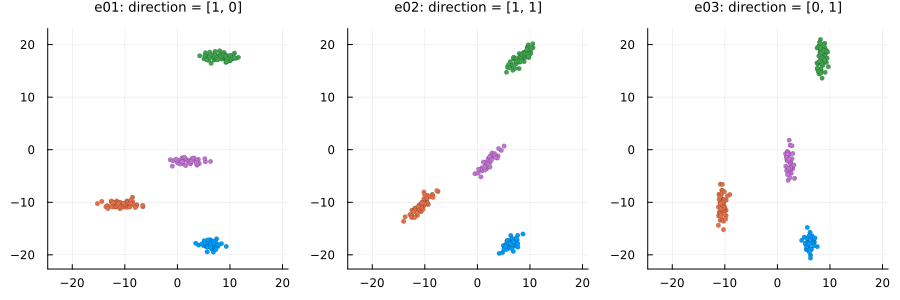
Changing the angle_disp parameter and using a custom angle_deltas_fn function
# Custom angle_deltas function: arbitrarily rotate some clusters by 90 degrees
angdel_90_fn(nclu, astd; rng=nothing) = rand(rng, [0, pi / 2], nclu)
e04 = clugen(2, 6, 500, [1, 0], 0, [10, 10], 10, 1.5, 0.5;
rng = StableRNG(1))
e05 = clugen(2, 6, 500, [1, 0], pi / 8, [10, 10], 10, 1.5, 0.5;
rng = StableRNG(1))
e06 = clugen(2, 6, 500, [1, 0], 0, [10, 10], 10, 1.5, 0.5;
angle_deltas_fn = angdel_90_fn, rng = StableRNG(1))plt = plot_examples_2d(
e04, "e04: angle_disp = 0",
e05, "e05: angle_disp = π/8",
e06, "e06: custom angle_deltas function")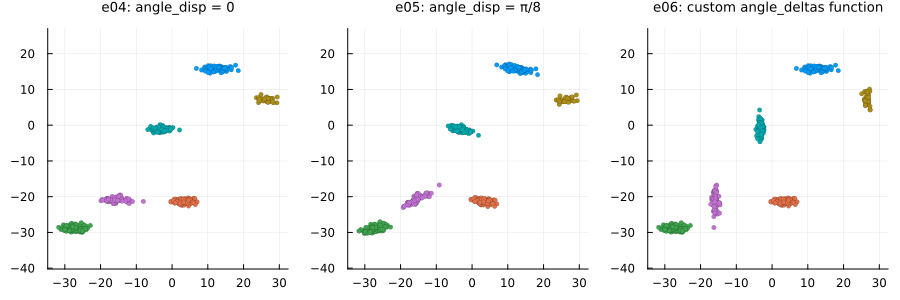
Manipulating the length of cluster-supporting lines
Using the llength parameter
e07 = clugen(2, 5, 800, [1, 0], pi / 10, [10, 10], 0, 0, 0.5;
point_dist_fn = "n", rng = StableRNG(2))
e08 = clugen(2, 5, 800, [1, 0], pi / 10, [10, 10], 10, 0, 0.5;
point_dist_fn = "n", rng = StableRNG(2))
e09 = clugen(2, 5, 800, [1, 0], pi / 10, [10, 10], 30, 0, 0.5;
point_dist_fn = "n", rng = StableRNG(2))plt = plot_examples_2d(
e07, "e07: llength = 0",
e08, "e08: llength = 10",
e09, "e09: llength = 30")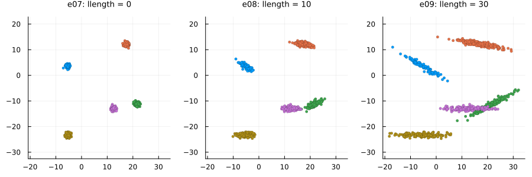
Changing the llength_disp parameter and using a custom llengths_fn function
# Custom llengths function: line lengths grow for each new cluster
llen_grow_fn(nclu, llen, llenstd; rng = nothing) =
llen * (collect(0:(nclu - 1)) + llenstd * randn(rng, nclu))
e10 = clugen(2, 5, 800, [1, 0], pi / 10, [10, 10], 15, 0.0, 0.5;
point_dist_fn = "n", rng = StableRNG(2))
e11 = clugen(2, 5, 800, [1, 0], pi / 10, [10, 10], 15, 10.0, 0.5;
point_dist_fn = "n", rng = StableRNG(2))
e12 = clugen(2, 5, 800, [1, 0], pi / 10, [10, 10], 10, 0.1, 0.5;
llengths_fn = llen_grow_fn, point_dist_fn = "n", rng = StableRNG(2))plt = plot_examples_2d(
e10, "e10: llength_disp = 0.0",
e11, "e11: llength_disp = 5.0",
e12, "e12: custom llengths function")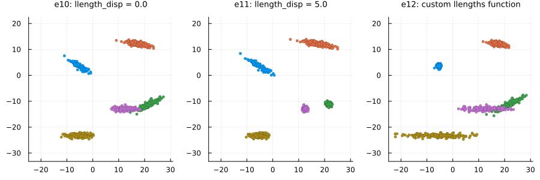
Manipulating relative cluster positions
Using the cluster_sep parameter
e13 = clugen(2, 8, 1000, [1, 1], pi / 4, [10, 10], 10, 2, 2.5; rng = StableRNG(321))
e14 = clugen(2, 8, 1000, [1, 1], pi / 4, [30, 10], 10, 2, 2.5; rng = StableRNG(321))
e15 = clugen(2, 8, 1000, [1, 1], pi / 4, [10, 30], 10, 2, 2.5; rng = StableRNG(321))plt = plot_examples_2d(
e13, "e13: cluster_sep = [10, 10]",
e14, "e14: cluster_sep = [30, 10]",
e15, "e15: cluster_sep = [10, 30]")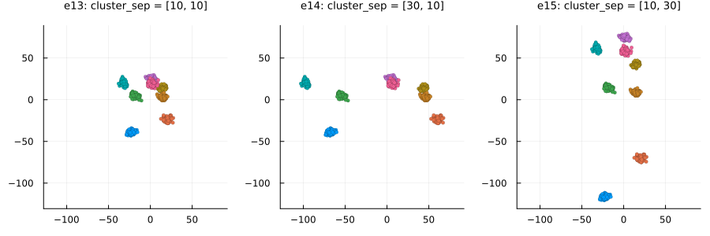
Changing the cluster_offset parameter and using a custom clucenters_fn function
# Custom clucenters function: places clusters in a diagonal
centers_diag_fn(nclu, csep, coff; rng=nothing) =
ones(nclu, length(csep)) .* (1:nclu) * maximum(csep) .+ coff'
e16 = clugen(2, 8, 1000, [1, 1], pi / 4, [10, 10], 10, 2, 2.5;
rng = StableRNG(321))
e17 = clugen(2, 8, 1000, [1, 1], pi / 4, [10, 10], 10, 2, 2.5;
cluster_offset = [20, -20], rng = StableRNG(321))
e18 = clugen(2, 8, 1000, [1, 1], pi / 4, [10, 10], 10, 2, 2.5;
cluster_offset = [-50, -50], clucenters_fn = centers_diag_fn, rng = StableRNG(321))plt = plot_examples_2d(
e16, "e16: default",
e17, "e17: cluster_offset = [20, -20]",
e18, "e18: custom clucenters function")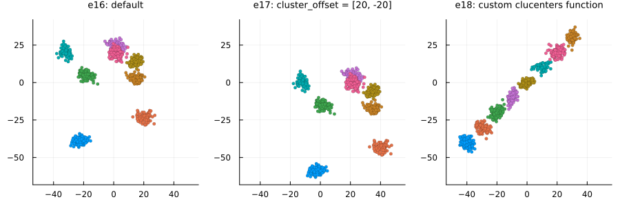
Lateral dispersion and placement of point projections on the line
Normal projection placement (default): proj_dist_fn = "norm"
e19 = clugen(2, 4, 1000, [1, 0], pi / 2, [20, 20], 13, 2, 0.0; rng = StableRNG(456))
e20 = clugen(2, 4, 1000, [1, 0], pi / 2, [20, 20], 13, 2, 1.0; rng = StableRNG(456))
e21 = clugen(2, 4, 1000, [1, 0], pi / 2, [20, 20], 13, 2, 3.0; rng = StableRNG(456))plt = plot_examples_2d(
e19, "e19: lateral_disp = 0",
e20, "e20: lateral_disp = 1",
e21, "e21: lateral_disp = 3")
Uniform projection placement: proj_dist_fn = "unif"
e22 = clugen(2, 4, 1000, [1, 0], pi / 2, [20, 20], 13, 2, 0.0;
proj_dist_fn = "unif", rng = StableRNG(456))
e23 = clugen(2, 4, 1000, [1, 0], pi / 2, [20, 20], 13, 2, 1.0;
proj_dist_fn = "unif", rng = StableRNG(456))
e24 = clugen(2, 4, 1000, [1, 0], pi / 2, [20, 20], 13, 2, 3.0;
proj_dist_fn = "unif", rng = StableRNG(456))plt = plot_examples_2d(
e22, "e22: lateral_disp = 0",
e23, "e23: lateral_disp = 1",
e24, "e24: lateral_disp = 3")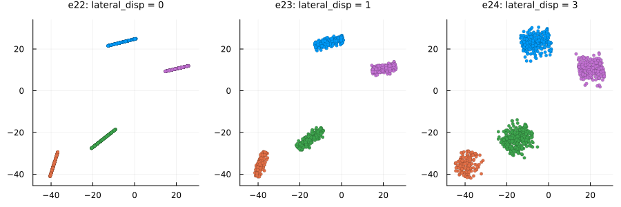
Custom projection placement using the Laplace distribution
# Custom proj_dist_fn: point projections placed using the Laplace distribution
proj_laplace(len, n, rng) = rand(rng, Laplace(0, len / 6), n)
e25 = clugen(2, 4, 1000, [1, 0], pi / 2, [20, 20], 13, 2, 0.0;
proj_dist_fn = proj_laplace, rng = StableRNG(456))
e26 = clugen(2, 4, 1000, [1, 0], pi / 2, [20, 20], 13, 2, 1.0;
proj_dist_fn = proj_laplace, rng = StableRNG(456))
e27 = clugen(2, 4, 1000, [1, 0], pi / 2, [20, 20], 13, 2, 3.0;
proj_dist_fn = proj_laplace, rng = StableRNG(456))plt = plot_examples_2d(
e25, "e25: lateral_disp = 0",
e26, "e26: lateral_disp = 1",
e27, "e27: lateral_disp = 3")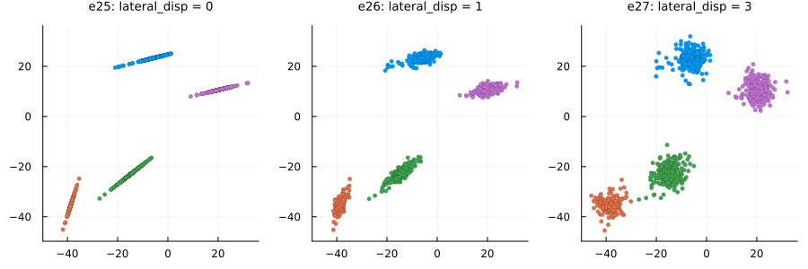
Controlling final point positions from their projections on the cluster-supporting line
Points on hyperplane orthogonal to cluster-supporting line (default): point_dist_fn = "n-1"
# Custom proj_dist_fn: point projections placed using the Laplace distribution
proj_laplace(len, n, rng) = rand(rng, Laplace(0, len / 6), n)
e28 = clugen(2, 5, 1500, [1, 0], pi / 3, [20, 20], 12, 3, 1.0;
rng = StableRNG(345))
e29 = clugen(2, 5, 1500, [1, 0], pi / 3, [20, 20], 12, 3, 1.0;
proj_dist_fn = "unif", rng = StableRNG(345))
e30 = clugen(2, 5, 1500, [1, 0], pi / 3, [20, 20], 12, 3, 1.0;
proj_dist_fn = proj_laplace, rng = StableRNG(345))plt = plot_examples_2d(
e28, "e28: proj_dist_fn=\"norm\" (default)",
e29, "e29: proj_dist_fn=\"unif\"",
e30, "e30: custom proj_dist_fn (Laplace)")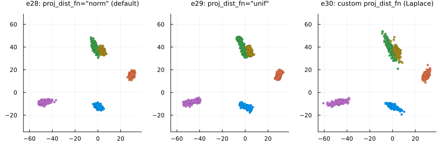
Points around projection on cluster-supporting line: point_dist_fn = "n"
# Custom proj_dist_fn: point projections placed using the Laplace distribution
proj_laplace(len, n, rng) = rand(rng, Laplace(0, len / 6), n)
e31 = clugen(2, 5, 1500, [1, 0], pi / 3, [20, 20], 12, 3, 1.0;
point_dist_fn = "n", rng = StableRNG(345))
e32 = clugen(2, 5, 1500, [1, 0], pi / 3, [20, 20], 12, 3, 1.0;
point_dist_fn = "n", proj_dist_fn = "unif", rng = StableRNG(345))
e33 = clugen(2, 5, 1500, [1, 0], pi / 3, [20, 20], 12, 3, 1.0;
point_dist_fn = "n", proj_dist_fn = proj_laplace, rng = StableRNG(345))plt = plot_examples_2d(
e31, "e31: proj_dist_fn=\"norm\" (default)",
e32, "e32: proj_dist_fn=\"unif\"",
e33, "e33: custom proj_dist_fn (Laplace)")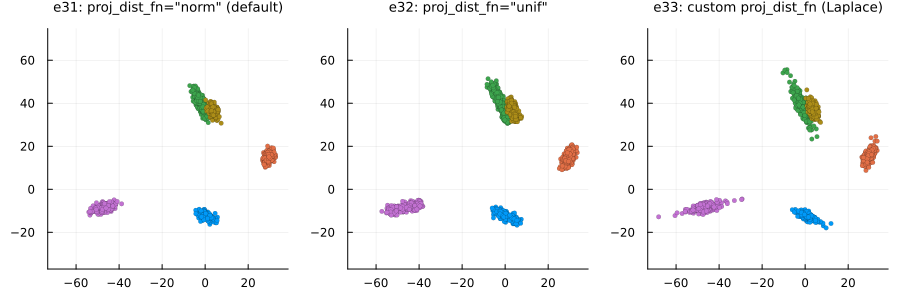
Custom point placement using the exponential distribution
# Custom point_dist_fn: final points placed using the Exponential distribution
function clupoints_n_1_exp(projs, lat_std, len, clu_dir, clu_ctr; rng=nothing)
dist_exp(npts, lstd, rg) = lstd .* rand(rg, Exponential(2 / lstd), npts, 1)
return CluGen.clupoints_n_1_template(projs, lat_std, clu_dir, dist_exp; rng=rng)
end
# Custom proj_dist_fn: point projections placed using the Laplace distribution
proj_laplace(len, n, rng) = rand(rng, Laplace(0, len / 6), n)
e34 = clugen(2, 5, 1500, [1, 0], pi / 3, [20, 20], 12, 3, 1.0;
point_dist_fn = clupoints_n_1_exp, rng = StableRNG(345))
e35 = clugen(2, 5, 1500, [1, 0], pi / 3, [20, 20], 12, 3, 1.0;
point_dist_fn = clupoints_n_1_exp, proj_dist_fn = "unif", rng = StableRNG(345))
e36 = clugen(2, 5, 1500, [1, 0], pi / 3, [20, 20], 12, 3, 1.0;
point_dist_fn = clupoints_n_1_exp, proj_dist_fn = proj_laplace, rng = StableRNG(345))plt = plot_examples_2d(
e34, "e34: proj_dist_fn=\"norm\" (default)",
e35, "e35: proj_dist_fn=\"unif\"",
e36, "e36: custom proj_dist_fn (Laplace)")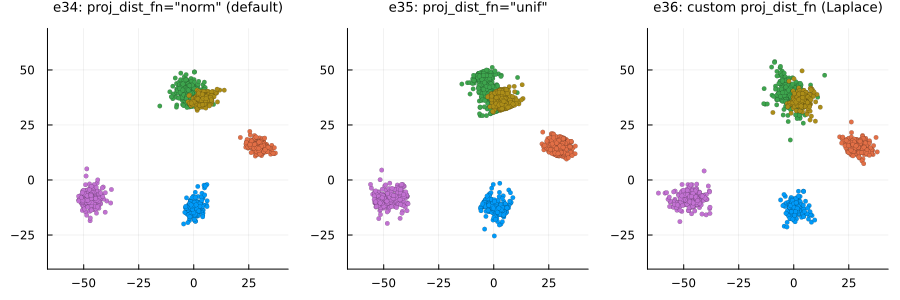
Manipulating cluster sizes
# Custom clusizes_fn (e38): cluster sizes determined via the uniform distribution,
# no correction for total points
clusizes_unif(nclu, npts, ae; rng = nothing) =
rand(rng, DiscreteUniform(1, 2 * npts / nclu), nclu)
# Custom clusizes_fn (e39): clusters all have the same size, no correction for total points
clusizes_equal(nclu, npts, ae; rng = nothing) = (npts ÷ nclu) .* ones(Integer, nclu)
# Custom clucenters_fn (all): yields fixed positions for the clusters
centers_fixed(nclu, csep, coff; rng = nothing) =
[-csep[1] -csep[2]; csep[1] -csep[2]; -csep[1] csep[2]; csep[1] csep[2]]
e37 = clugen(2, 4, 1500, [1, 1], pi, [20, 20], 0, 0, 5;
clucenters_fn = centers_fixed, point_dist_fn = "n",
rng = StableRNG(9))
e38 = clugen(2, 4, 1500, [1, 1], pi, [20, 20], 0, 0, 5;
clucenters_fn = centers_fixed, clusizes_fn = clusizes_unif, point_dist_fn = "n",
rng = StableRNG(9))
e39 = clugen(2, 4, 1500, [1, 1], pi, [20, 20], 0, 0, 5;
clucenters_fn = centers_fixed, clusizes_fn = clusizes_equal, point_dist_fn = "n",
rng = StableRNG(9))plt = plot_examples_2d(
e37, "e37: normal dist. (default)",
e38, "e38: unif. dist. (custom)",
e39, "e39: equal size (custom)")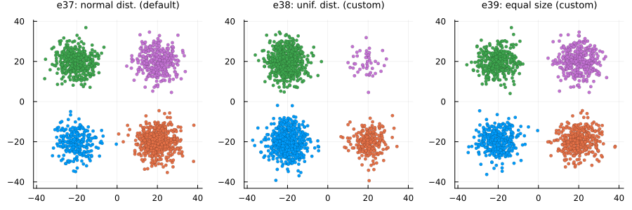
3D examples
The 3D examples were plotted with the plot_examples_3d() helper function available here. For plotting an example directly, e.g. for e40, run:
plot(e40.points[:, 1], e40.points[:, 2], e40.points[:, 3], seriestype = :scatter, group = e40.clusters)`.Manipulating the direction of cluster-supporting lines
Using the direction parameter
e40 = clugen(3, 4, 500, [1, 0, 0], 0, [10, 10, 10], 15, 1.5, 0.5; rng = StableRNG(1))
e41 = clugen(3, 4, 500, [1, 1, 1], 0, [10, 10, 10], 15, 1.5, 0.5; rng = StableRNG(1))
e42 = clugen(3, 4, 500, [0, 0, 1], 0, [10, 10, 10], 15, 1.5, 0.5; rng = StableRNG(1))plt = plot_examples_3d(
e40, "e40: direction = [1, 0, 0]",
e41, "e41: direction = [1, 1, 1]",
e42, "e42: direction = [0, 0, 1]")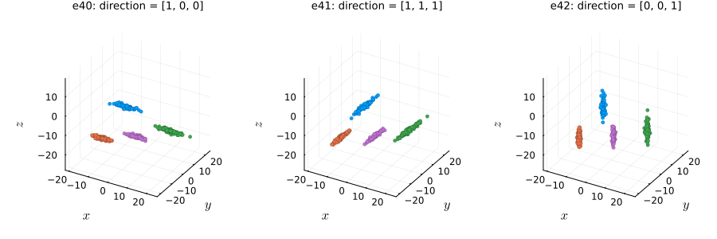
Changing the angle_disp parameter and using a custom angle_deltas_fn function
# Custom angle_deltas function: arbitrarily rotate some clusters by 90 degrees
angdel_90_fn(nclu, astd; rng=nothing) = rand(rng, [0, pi / 2], nclu)
e43 = clugen(3, 6, 1000, [1, 0, 0], 0, [10, 10, 10], 15, 1.5, 0.5;
rng = StableRNG(2))
e44 = clugen(3, 6, 1000, [1, 0, 0], pi / 8, [10, 10, 10], 15, 1.5, 0.5;
rng = StableRNG(2))
e45 = clugen(3, 6, 1000, [1, 0, 0], 0, [10, 10, 10], 15, 1.5, 0.5;
angle_deltas_fn = angdel_90_fn, rng = StableRNG(2))plt = plot_examples_3d(
e43, "e43: angle_disp = 0",
e44, "e44: angle_disp = π / 8",
e45, "e45: custom angle_deltas function")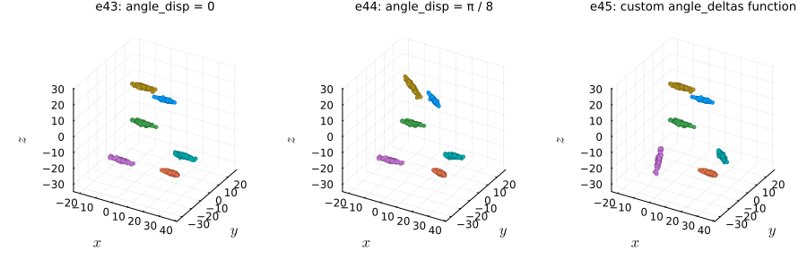
Manipulating the length of cluster-supporting lines
Using the llength parameter
e46 = clugen(3, 5, 800, [1, 0, 0], pi / 10, [10, 10, 10], 0, 0, 0.5;
point_dist_fn = "n", rng = StableRNG(2))
e47 = clugen(3, 5, 800, [1, 0, 0], pi / 10, [10, 10, 10], 10, 0, 0.5;
point_dist_fn = "n", rng = StableRNG(2))
e48 = clugen(3, 5, 800, [1, 0, 0], pi / 10, [10, 10, 10], 30, 0, 0.5;
point_dist_fn = "n", rng = StableRNG(2))plt = plot_examples_3d(
e46, "e46: llength = 0",
e47, "e47: llength = 10",
e48, "e48: llength = 30")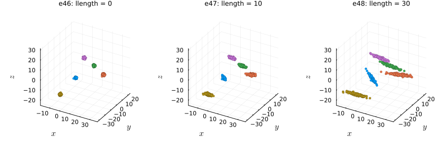
Changing the llength_disp parameter and using a custom llengths_fn function
# Custom llengths function: line lengths tend to grow for each new cluster
llen_grow_fn(nclu, llen, llenstd; rng = nothing) =
llen * (collect(0:(nclu - 1)) + llenstd * randn(rng, nclu))
e49 = clugen(3, 5, 800, [1, 0, 0], pi / 10, [10, 10, 10], 15, 0.0, 0.5;
point_dist_fn = "n", rng = StableRNG(2))
e50 = clugen(3, 5, 800, [1, 0, 0], pi / 10, [10, 10, 10], 15, 10.0, 0.5;
point_dist_fn = "n", rng = StableRNG(2))
e51 = clugen(3, 5, 800, [1, 0, 0], pi / 10, [10, 10, 10], 10, 0.1, 0.5;
llengths_fn = llen_grow_fn, point_dist_fn = "n", rng = StableRNG(2))plt = plot_examples_3d(
e49, "e49: llength_disp = 0.0",
e50, "e50: llength_disp = 10.0",
e51, "e51: custom llengths function")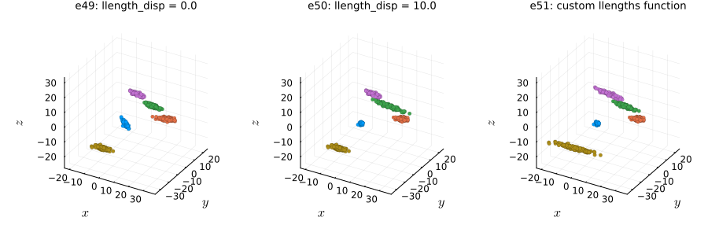
Manipulating relative cluster positions
Using the cluster_sep parameter
e52 = clugen(3, 8, 1000, [1, 1, 1], pi / 4, [30, 10, 10], 25, 4, 3; rng = StableRNG(321))
e53 = clugen(3, 8, 1000, [1, 1, 1], pi / 4, [10, 30, 10], 25, 4, 3; rng = StableRNG(321))
e54 = clugen(3, 8, 1000, [1, 1, 1], pi / 4, [10, 10, 30], 25, 4, 3; rng = StableRNG(321))plt = plot_examples_3d(
e52, "e52: cluster_sep = [30, 10, 10]",
e53, "e53: cluster_sep = [10, 30, 10]",
e54, "e54: cluster_sep = [10, 10, 30]")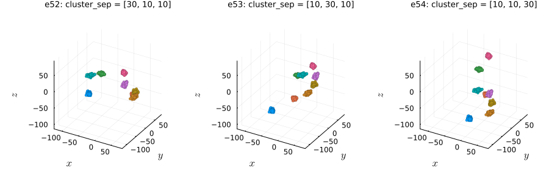
Changing the cluster_offset parameter and using a custom clucenters_fn function
# Custom clucenters function: places clusters in a diagonal
centers_diag_fn(nclu, csep, coff; rng=nothing) = ones(nclu, length(csep)) .* (1:nclu) * maximum(csep) .+ coff'
e55 = clugen(3, 8, 1000, [1, 1, 1], pi / 4, [10, 10, 10], 12, 3, 2.5;
rng = StableRNG(321))
e56 = clugen(3, 8, 1000, [1, 1, 1], pi / 4, [10, 10, 10], 12, 3, 2.5;
cluster_offset = [20, -20, 20], rng = StableRNG(321))
e57 = clugen(3, 8, 1000, [1, 1, 1], pi / 4, [10, 10, 10], 12, 3, 2.5;
cluster_offset = [-50, -50, -50], clucenters_fn = centers_diag_fn, rng = StableRNG(321))plt = plot_examples_3d(
e55, "e55: default",
e56, "e56: cluster_offset = [20, -20, 20]",
e57, "e57: custom clucenters function")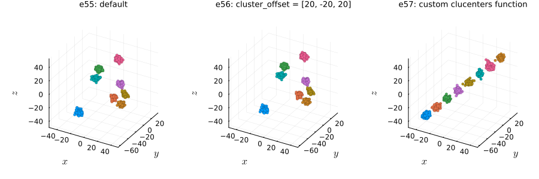
Lateral dispersion and placement of point projections on the line
Normal projection placement (default): proj_dist_fn = "norm"
e58 = clugen(3, 4, 1000, [1, 0, 0], pi / 2, [20, 20, 20], 13, 2, 0.0; rng = StableRNG(456))
e59 = clugen(3, 4, 1000, [1, 0, 0], pi / 2, [20, 20, 20], 13, 2, 1.0; rng = StableRNG(456))
e60 = clugen(3, 4, 1000, [1, 0, 0], pi / 2, [20, 20, 20], 13, 2, 3.0; rng = StableRNG(456))plt = plot_examples_3d(
e58, "e58: lateral_disp = 0",
e59, "e59: lateral_disp = 1",
e60, "e60: lateral_disp = 3")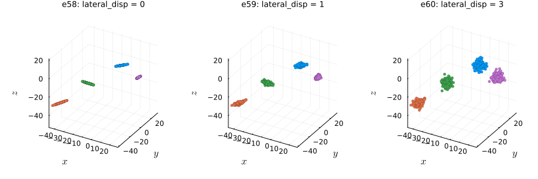
Uniform projection placement: proj_dist_fn = "unif"
e61 = clugen(3, 4, 1000, [1, 0, 0], pi / 2, [20, 20, 20], 13, 2, 0.0;
proj_dist_fn = "unif", rng = StableRNG(456))
e62 = clugen(3, 4, 1000, [1, 0, 0], pi / 2, [20, 20, 20], 13, 2, 1.0;
proj_dist_fn = "unif", rng = StableRNG(456))
e63 = clugen(3, 4, 1000, [1, 0, 0], pi / 2, [20, 20, 20], 13, 2, 3.0;
proj_dist_fn = "unif", rng = StableRNG(456))plt = plot_examples_3d(
e61, "e61: lateral_disp = 0",
e62, "e62: lateral_disp = 1",
e63, "e63: lateral_disp = 3")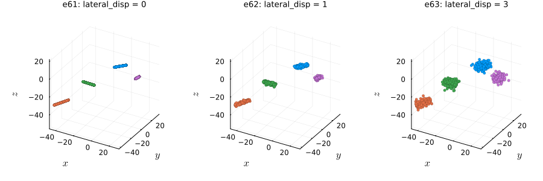
Custom projection placement using the Laplace distribution
# Custom proj_dist_fn: point projections placed using the Laplace distribution
proj_laplace(len, n, rng) = rand(rng, Laplace(0, len / 6), n)
e64 = clugen(3, 4, 1000, [1, 0, 0], pi / 2, [20, 20, 20], 13, 2, 0.0;
proj_dist_fn = proj_laplace, rng = StableRNG(456))
e65 = clugen(3, 4, 1000, [1, 0, 0], pi / 2, [20, 20, 20], 13, 2, 1.0;
proj_dist_fn = proj_laplace, rng = StableRNG(456))
e66 = clugen(3, 4, 1000, [1, 0, 0], pi / 2, [20, 20, 20], 13, 2, 3.0;
proj_dist_fn = proj_laplace, rng = StableRNG(456))plt = plot_examples_3d(
e64, "e64: lateral_disp = 0",
e65, "e65: lateral_disp = 1",
e66, "e66: lateral_disp = 3")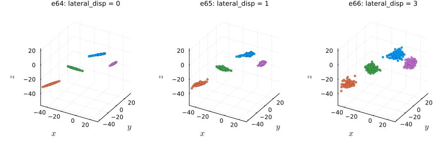
Controlling final point positions from their projections on the cluster-supporting line
Points on hyperplane orthogonal to cluster-supporting line (default): point_dist_fn = "n-1"
# Custom proj_dist_fn: point projections placed using the Laplace distribution
proj_laplace(len, n, rng) = rand(rng, Laplace(0, len / 6), n)
e67 = clugen(3, 5, 1500, [1, 0, 0], pi / 3, [20, 20, 20], 22, 3, 2;
rng = StableRNG(34))
e68 = clugen(3, 5, 1500, [1, 0, 0], pi / 3, [20, 20, 20], 22, 3, 2;
proj_dist_fn = "unif", rng = StableRNG(34))
e69 = clugen(3, 5, 1500, [1, 0, 0], pi / 3, [20, 20, 20], 22, 3, 2;
proj_dist_fn = proj_laplace, rng = StableRNG(34))plt = plot_examples_3d(
e67, "e67: proj_dist_fn=\"norm\" (default)",
e68, "e68: proj_dist_fn=\"unif\"",
e69, "e69: custom proj_dist_fn (Laplace)")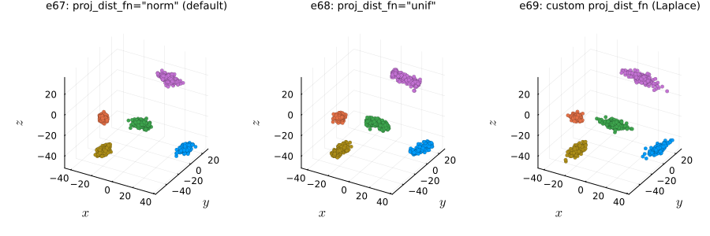
Points around projection on cluster-supporting line: point_dist_fn = "n"
# Custom proj_dist_fn: point projections placed using the Laplace distribution
proj_laplace(len, n, rng) = rand(rng, Laplace(0, len / 6), n)
e70 = clugen(3, 5, 1500, [1, 0, 0], pi / 3, [20, 20, 20], 22, 3, 2;
point_dist_fn = "n", rng = StableRNG(34))
e71 = clugen(3, 5, 1500, [1, 0, 0], pi / 3, [20, 20, 20], 22, 3, 2;
point_dist_fn = "n", proj_dist_fn = "unif", rng = StableRNG(34))
e72 = clugen(3, 5, 1500, [1, 0, 0], pi / 3, [20, 20, 20], 22, 3, 2;
point_dist_fn = "n", proj_dist_fn = proj_laplace, rng = StableRNG(34))plt = plot_examples_3d(
e70, "e70: proj_dist_fn=\"norm\" (default)",
e71, "e71: proj_dist_fn=\"unif\"",
e72, "e72: custom proj_dist_fn (Laplace)")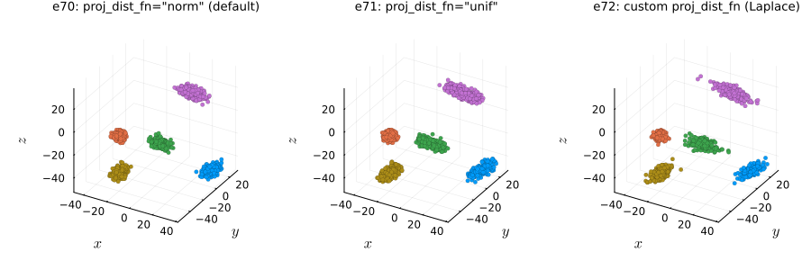
Custom point placement using the exponential distribution
# Custom point_dist_fn: final points placed using the Exponential distribution
function clupoints_n_1_exp(projs, lat_std, len, clu_dir, clu_ctr; rng=nothing)
dist_exp(npts, lstd, rg) = lstd .* rand(rg, Exponential(2 / lstd), npts, 1)
return CluGen.clupoints_n_1_template(projs, lat_std, clu_dir, dist_exp; rng=rng)
end
# Custom proj_dist_fn: point projections placed using the Laplace distribution
proj_laplace(len, n, rng) = rand(rng, Laplace(0, len / 6), n)
e73 = clugen(3, 5, 1500, [1, 0, 0], pi / 3, [20, 20, 20], 22, 3, 2;
point_dist_fn = clupoints_n_1_exp, rng = StableRNG(34))
e74 = clugen(3, 5, 1500, [1, 0, 0], pi / 3, [20, 20, 20], 22, 3, 2;
point_dist_fn = clupoints_n_1_exp, proj_dist_fn = "unif", rng = StableRNG(34))
e75 = clugen(3, 5, 1500, [1, 0, 0], pi / 3, [20, 20, 20], 22, 3, 2;
point_dist_fn = clupoints_n_1_exp, proj_dist_fn = proj_laplace, rng = StableRNG(34))plt = plot_examples_3d(
e73, "e73: proj_dist_fn=\"norm\" (default)",
e74, "e74: proj_dist_fn=\"unif\"",
e75, "e75: custom proj_dist_fn (Laplace)")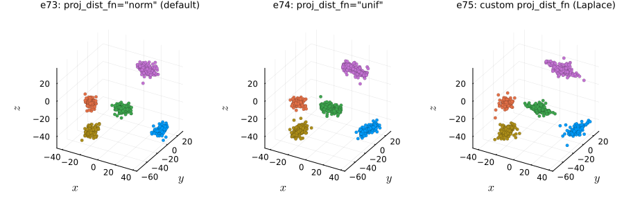
Manipulating cluster sizes
# Custom clusizes_fn (e77): cluster sizes determined via the uniform distribution,
# no correction for total points
clusizes_unif(nclu, npts, ae; rng = nothing) =
rand(rng, DiscreteUniform(1, 2 * npts / nclu), nclu)
# Custom clusizes_fn (e78): clusters all have the same size, no correction for total points
clusizes_equal(nclu, npts, ae; rng = nothing) = (npts ÷ nclu) .* ones(Integer, nclu)
# Custom clucenters_fn (all): yields fixed positions for the clusters
centers_fixed(nclu, csep, coff; rng=nothing) =
[ -csep[1] -csep[2] -csep[3]; csep[1] -csep[2] -csep[3];
-csep[1] csep[2] csep[3]; csep[1] csep[2] csep[3] ]
e76 = clugen(3, 4, 1500, [1, 1, 1], pi, [20, 20, 20], 0, 0, 5;
clucenters_fn = centers_fixed, point_dist_fn = "n",
rng = StableRNG(9))
e77 = clugen(3, 4, 1500, [1, 1, 1], pi, [20, 20, 20], 0, 0, 5;
clucenters_fn = centers_fixed, clusizes_fn = clusizes_unif, point_dist_fn = "n",
rng = StableRNG(9))
e78 = clugen(3, 4, 1500, [1, 1, 1], pi, [20, 20, 20], 0, 0, 5;
clucenters_fn = centers_fixed, clusizes_fn = clusizes_equal, point_dist_fn = "n",
rng = StableRNG(9))plt = plot_examples_3d(
e76, "e76: normal dist. (default)",
e77, "e77: unif. dist. (custom)",
e78, "e78: equal size (custom)")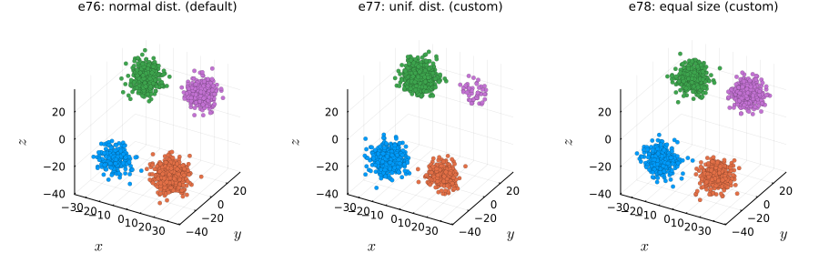
Examples in other dimensions
Basic 1D example with density plot
The following example was plotted with the plot_examples_1d() function available here.
# Custom proj_dist_fn: point projections placed using the Laplace distribution
proj_laplace(len, n, rng) = rand(rng, Laplace(0, len / 6), n)
e79 = clugen(1, 3, 2000, [1], 0, [10], 6, 1.5, 0; rng = StableRNG(45))
e80 = clugen(1, 3, 2000, [1], 0, [10], 6, 1.5, 0; proj_dist_fn = "unif", rng = StableRNG(45))
e81 = clugen(1, 3, 2000, [1], 0, [10], 6, 1.5, 0; proj_dist_fn = proj_laplace, rng = StableRNG(45))plt = plot_examples_1d(
e79, "e79: proj_dist_fn=\"norm\" (default)",
e80, "e80: proj_dist_fn=\"unif\"",
e81, "e81: custom proj_dist_fn (Laplace)")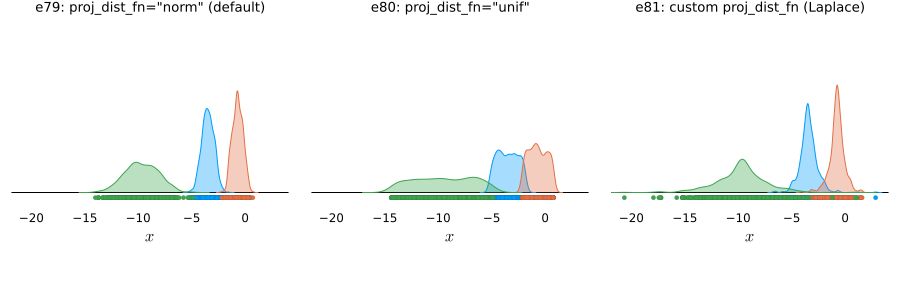
5D example with default optional arguments
The following examples were plotted with the plot_examples_nd() function available here.
nd = 5
e82 = clugen(nd, 6, 1500, [1, 1, 0.5, 0, 0], pi / 16, 30 .* ones(nd), 30, 4, 3;
rng = StableRNG(123))plt = plot_examples_nd(e82, "e82: 5D with optional parameters set to defaults")
5D example with proj_dist_fn = "unif" and point_dist_fn = "n"
nd = 5
e83 = clugen(nd, 6, 1500, [0.1, 0.3, 0.5, 0.3, 0.1], pi / 12, 30 .* ones(nd), 35, 5, 3.5;
proj_dist_fn = "unif", point_dist_fn = "n", rng = StableRNG(321))plt = plot_examples_nd(e83, "e83: 5D with proj_dist_fn=\"unif\" and point_dist_fn=\"n\"")